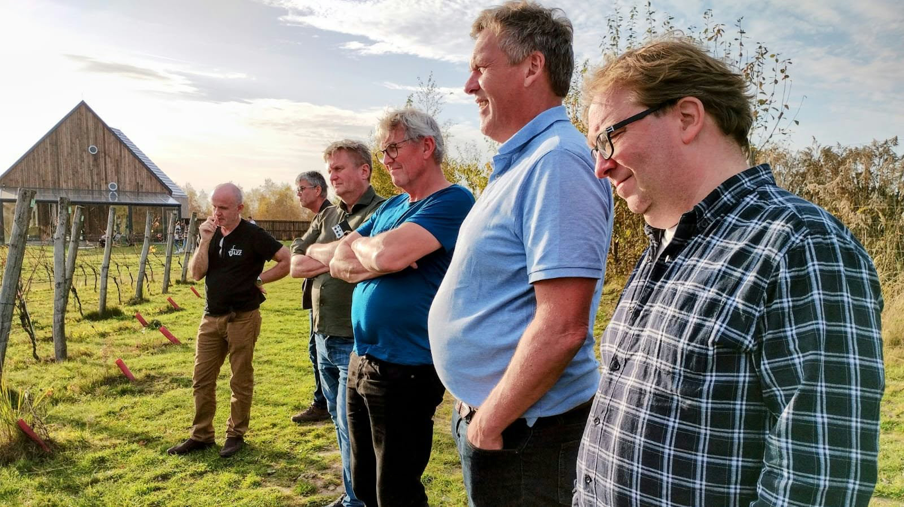
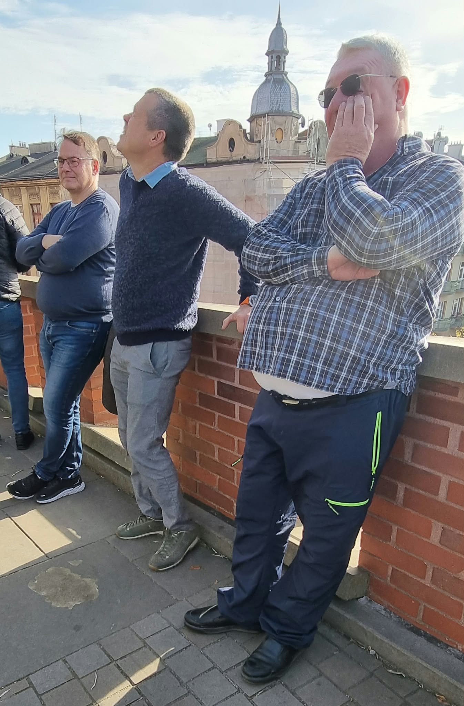
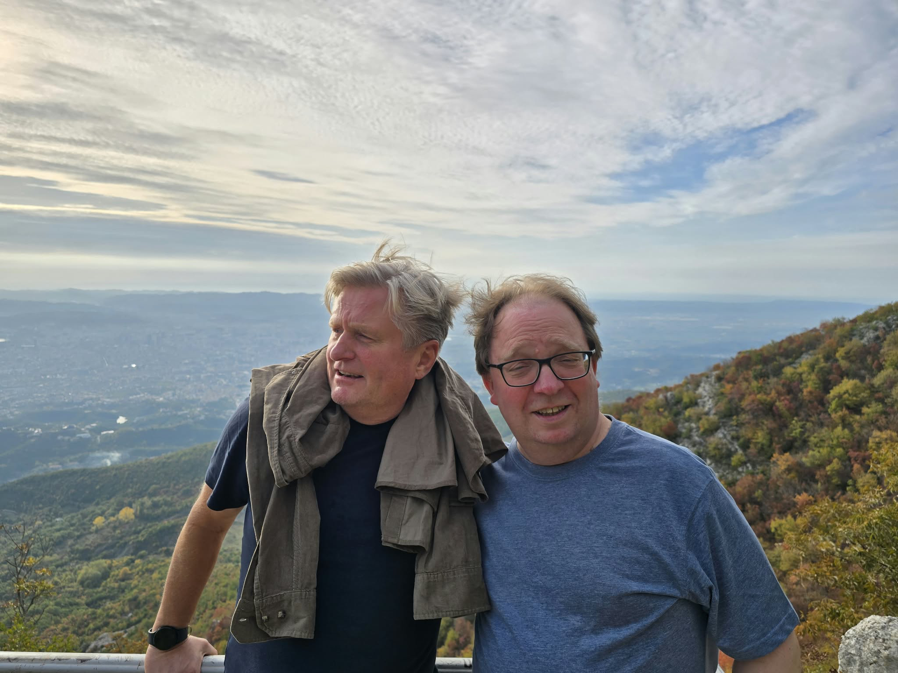
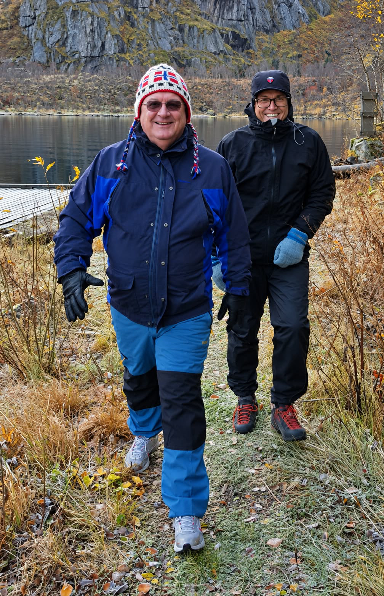
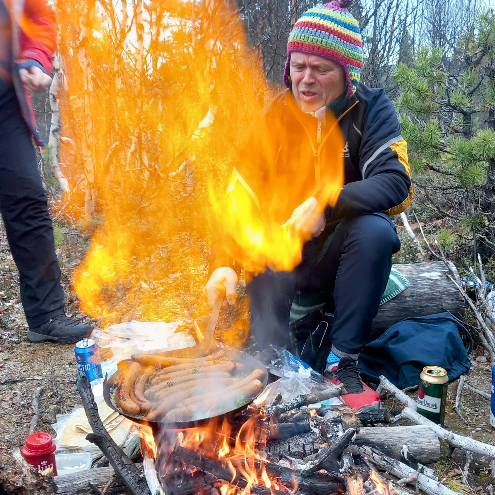

Nå nærmer det seg Lognvik 2026. Fra torsdag 29. oktober til søndag 1. november har vi hele fjellstua for oss selv. Planen er to turdager, tre gode middager og tolv foredrag.
Jeg overnatter i Grungedal onsdag og er på Lognvik fra torsdag i titiden. Dere kommer etter hvert som det passer og finner dere til rette. Ta gjerne en rusletur ned til Lognvikvatnet eller bortom det gamle gårdstunet. Den som vil, kan prøve fiskelykken. Det er også fullt tillatt å sette seg foran peisen med en øl eller et glass vin og påstå at man «hjelper til med å holde oversikten».
Når de fleste har kommet, sånn litt utpå, fyrer vi opp grillen. Etter maten åpner vi årets faglige program med fire foredrag. Temaet blir som kjent kjent først når foredragsholderen reiser seg. Ingen får dermed anledning til å lese seg opp på forhånd for å stille plagsomt presise spørsmål.
Etter frokost kjører vi omtrent 15–20 minutter til Vierli og legger ut på årets første fellestur – se egen seksjon under. Tilbake på fjellstua er det tid til badstue, fiske, en hvil eller en biljardkamp mellom to menn som begge hevder at de egentlig var ganske gode før. Senere følger fire nye foredrag.
Fredag kveld serveres pinnekjøtt à la Thorbjørn og Jan Olav. Vi satser på et langt måltid, fyr i peisen og samtaler som beveger seg stadig lenger bort fra der de begynte.
Lørdag går vi etter planen til Bossnuten – helgens mest krevende tur. Detaljene finner du i seksjonen under. Lørdag ettermiddag får vi de fire siste foredragene.
Så overtar Håvard og Kjetil kjøkkenet og leder oss inn i helgens store gourmetmåltid. Jeg kjenner ikke menyen, men har forstått nok til å glede meg. Utover kvelden byr Steinar Kjeldsen på seg selv.
Vi spiser frokost, drikker den kaffen som trengs, rydder etter oss og vender hjem. Kanskje rekker vi også å kåre helgens mest overbevisende midlertidige ekspert. Prisen er foreløpig ikke bestemt, men juryen er utnevnt av meg og har ingen klageinstans.
Etter frokost kjører vi omtrent 15–20 minutter til Vierli. Derfra går vi via skulpturen Vidsyn, videre mot Oksatjønn, over Storpungen og inn i selve Silkedalen, før vi vender tilbake til Vierli. Turen er på rundt seks kilometer i fantastisk flott, åpent fjellterreng, med utsikt mot blant annet Møsvatn og Hardangervidda.
Vi tar med lunsj og kaffe ut, finner oss en fin plass og griller hvis forholdene ligger til rette for det. Turen skal få ta den tiden den tar. Ingen trenger å dokumentere personlig rekord på pulsklokka, og særlig ikke fortelle resten av oss om den.
Dette er helgens mest krevende tur: omtrent 8,8 kilometer tur/retur og nær 500 høydemeter. Fra Varlandsveien går vi opp gjennom fjellbjørkeskogen og videre mot toppen. Belønningen er vid utsikt mot Møsvatn, Gaustatoppen og Hardangervidda. Vi tar med mat og drikke og setter av god tid, også til dem som mener at en topptur først er vellykket når man har stoppet for å fotografere den minst tretti ganger.
Jeg har bestilt kjempebra vær hele helgen. Det er likevel mulig at Meteorologisk institutt ikke respekterer min myndighet. Ta derfor med ordentlige fjellklær og regntøy. Vi velger endelig lørdagstur etter vær og føre:
Planen er tolv foredrag – fire torsdag, fire fredag og fire lørdag. Temaet blir som kjent kjent først når foredragsholderen reiser seg. Vinneren av årets presentasjon får en vandrepokal.
Foredragene skal vare minst fem og høyst ti minutter. Notater og hjelpemidler er lov. Å lese høyt fra en KI-generert tekst man selv ikke forstår, er fortsatt ikke det. Publikum kommer til å merke forskjellen, og enkelte av dem vil neppe holde det for seg selv.
«Byr på seg selv – og øser fra sitt indre landskap»
Viser, historier og stemninger fra Kjeldsens indre geografi. Det har blitt både latter og allsang tidligere, og det blir det igjen.
Vi kan fiske i østre del av Lognvikvatnet, og fiskekort til alle er inkludert. Vi får låne båt. Ta med fiskeutstyr hvis du vil prøve deg, og egen redningsvest hvis du skal ut i båten.
Fjellstua har dessuten badstue, biljard og bordtennis. Min erfaring med denne gjengen tilsier at minst én av aktivitetene vil bli tatt langt mer alvorlig enn noen er villige til å innrømme.
Et lite knippe fra tidligere ekspedisjoner. Hvilket år de er fra, overlates til den indre debatt.





«Jeg gleder meg til fjellet, måltidene, den høyst usikre ekspertisen og ikke minst til å samle hele gjengen igjen. Det blir godt å se dere.»